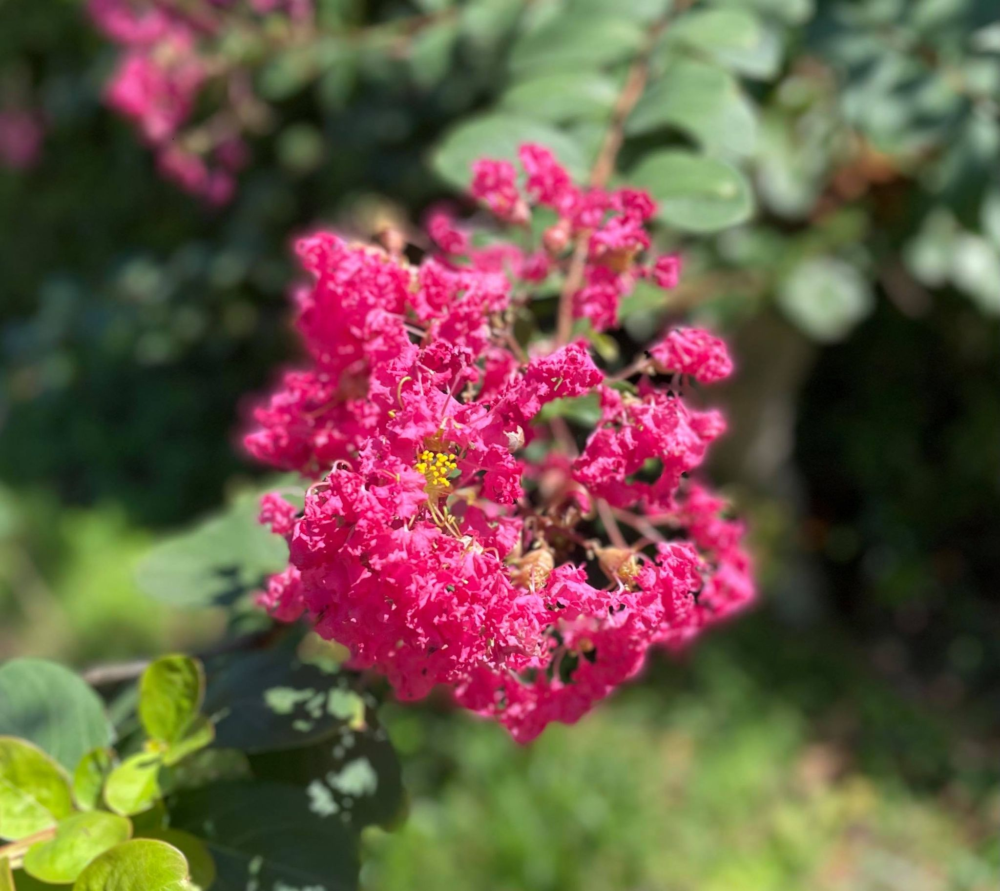

Happy Birthday! Nuru!
ヌルは僕にとって世界で一番可愛い女の子です。
ヌルは僕にとってただ一人のかけがえのない存在です。
ヌルは僕の人生に本当の幸せを与えてくれた、初めての女の子です。
ヌルが「仕事頑張ってくれる拓人が好き」と言ってくれるから、仕事を頑張れます。
ヌルが悲しい顔をしていると、僕も悲しくなります。
ヌルが笑っていると、僕はその夜に幸せな夢を見れます。
ヌルが好きって言ってくれると、通話の後に踊りだしちゃいます。
ヌルがビデオ通話してる時に寝ちゃうと、僕が守ってあげなきゃと思います。
ヌルが冷たいと、ちょっと自信なくなっちゃうけど、そんなヌルも好きです。
ヌルが可愛い意地悪をしてくると、僕は嬉しくてニヤニヤしちゃいます。
ヌルが「遊ぼ～」って甘えてくる時、僕は仕事をやる気が全くしません。
ヌルが僕の人生のただ一人のヒロインだったら良いな。
ヌルに愛してるって100回言いたい。会って抱きしめたい。
早く会いたいよ、ヌル。Aku cinta kamu
From Takuto Yoshikai
Your boyfriend